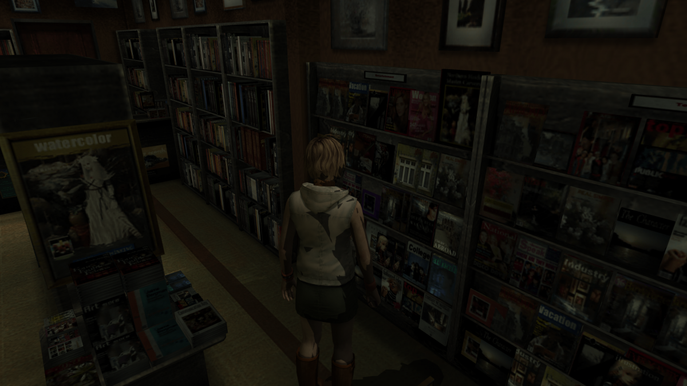
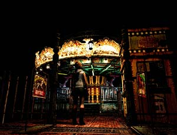
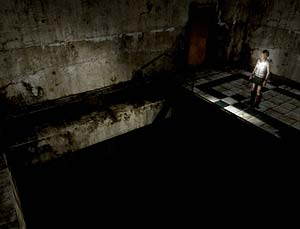

A runtime patch for the original Windows PC release of Silent Hill 3, adding widescreen, resolution, frame-rate, and stability fixes.

A runtime patch for the original Windows PC release of Silent Hill 3, adding widescreen, resolution, frame-rate, and stability fixes.
✓ implemented ○ planned
SH3Enhanced.ini.The game keeps its original 4:3 camera view when the widescreen fix is off. Turn it on to widen the camera and remove the gameplay side bars.

The fix removes borders added to in-engine cutscenes.

Custom Resolution sets the output size and, separately, the game's internal render size.

You need the original PC game installed first. SH3 Enhanced is a patch; it does not include the game or its files.
There is no ready-to-use package published yet. When one is available, download it here, extract its files beside sh3.exe, then start the game normally.
Common fixes for the Windows PC version.